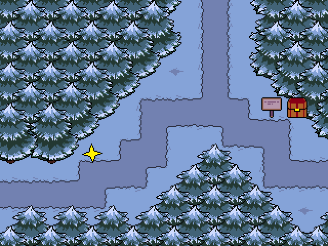
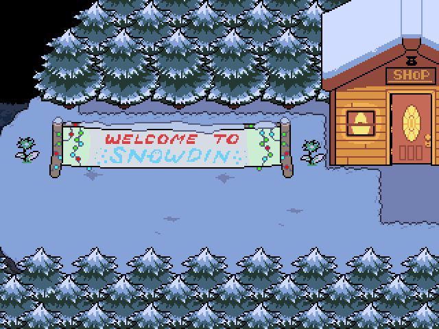
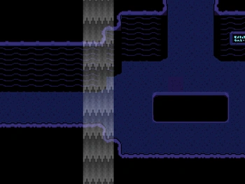

ÁREAS
* Durante UNDERTALE, o jogador pode encontrar várias áreas e locais diferentes.
* Cada área possui personagens e trilhas sonóras únicas, e alta significância a história do jogo.
Ruínas

 * As Ruínas são a primeira área do jogo, encontrada após o protagonista cair num buraco no Monte Ebott antes dos eventos do jogo.
* As Ruínas são a primeira área do jogo, encontrada após o protagonista cair num buraco no Monte Ebott antes dos eventos do jogo.
Há muitos quebra-cabeças e armadilhas pelas Ruínas, bem como um excesso de folhas vermelhas e videiras espalhadas por quase todas as áreas desta localidade.
Um pequeno rio atravessa as Ruínas, e seu chão de coloração roxa-escura se caracteriza por pequenos "caminhos" com um chão de cor mais clara.
* No fim das Ruínas, você encontra uma casa, que é a residência de Toriel. Nesta casa, você pode encontrar uma cozinha, uma sala de estar e um corredor com três quartos.
O primeiro quarto é reservado para você, onde você pode dormir, o segundo quarto é o quarto de Toriel, que você pode inspecionar, e um terceiro quarto, trancado.
* Na casa, você também pode encontrar escadas. Essas escadas te levam para a saída das Ruínas, que Toriel te proíbe de entrar.
Se você falar com a Toriel sobre sair do subsolo, ela irá descer as escadas para destruir a saída. Você pode interromper ela, e convencer ela a deixar-lo sair.
Snowdin


* Snowdin é a segunda área do jogo, encontrada após o protagonista sair das ruínas.
Snowdin é um local de clima frio e está praticamente coberto com gelo e neve, bem como várias árvores em toda parte da região.
Depois de resolver vários quebra-cabeças colocados por Papyrus e derrotar os cães da Guarda Real, o protagonista chega na cidade, onde há vários habitantes.
No final da cidade de Snowdin você pode encontrar Papyrus novamente, onde ele irá tentar te capturar, mas você pode convencer ele a ser seu amigo e deixar você passar.
Waterfall

* Waterfall é a terceira área do jogo, encontrada diretamente depois de Snowdin.
Waterfall é um local úmido, cheio de lagoas, cachoeiras e muita água.
Caracteriza-se por suas cores temáticas de azul, preto e roxo, além de ser um lugar bastante chuvoso.
As Flores de Eco e a água da região apresentam uma cor azul-verde e azul-clara, que proporciona luz nas regiões escuras, junto com lanternas e cristais luminosos.
* Durante seu estar em Waterfall, você é caçado por Undyne, e tem que se esconder dela.
No fim de Waterfall, você é encontrado(a) por Undyne e precisa correr dela.
* Após correr de Undyne, você pode achar a casa dela e virar amigo(a) dela.